The first 3D tennis court. In Clearwater. Ours first.
This page is the dream, labeled as a dream throughout. The ladder below it is real and running today; the court it climbs to is the vision — no built court is claimed, no adoption or endorsement by anyone is claimed. The design goal is stated plainly: built to the highest standards in tennis — Wimbledon-grade ambition, as an ambition, on the record as the goal.
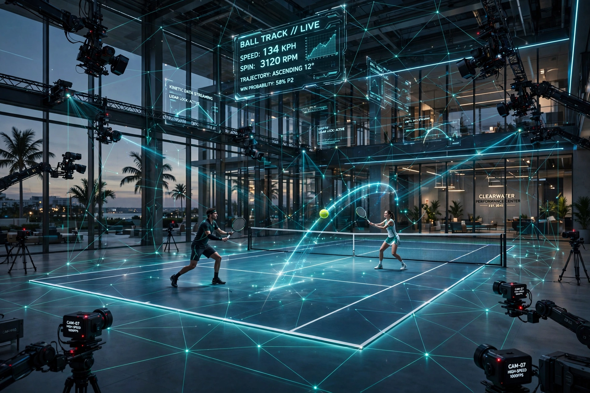
CONCEPT RENDER of the vision — not a photograph, not a built court. The sensed volume, the camera grid, the LiDAR mesh: this is what we are building toward.
CONCEPT TEASER (10 seconds) — the same render, animated. A vision of the court alive.
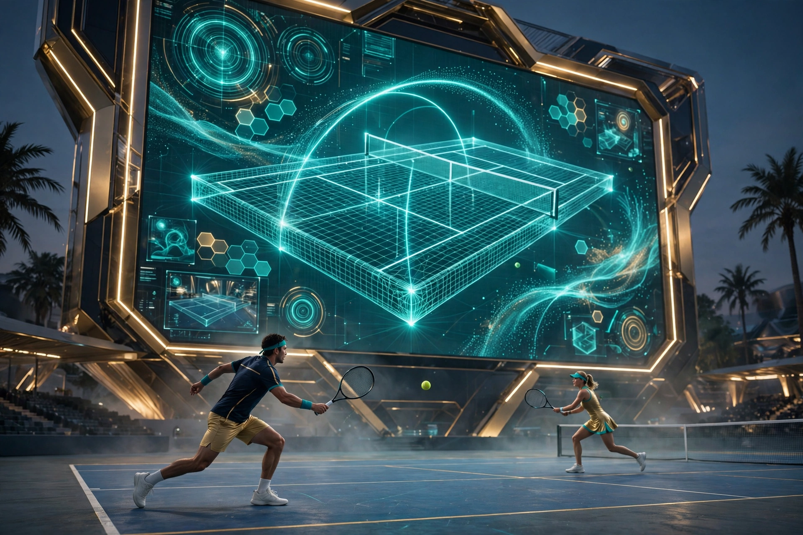
The mesh the sensors knit does not stay invisible. The great wall at the court’s back brings it up for the whole building: the 3D court itself, replayed from any angle; one point studied three ways at once; the analytics drawn over the rally while it is still warm. What the grid sees, the wall shows — that is how the visual courts work: one sensed volume, every view of it, on the wall.
CONCEPT VISUAL — a render of the vision, not a photograph, not a built court.
The systems on the ladder are not mock-ups. The agentic layer already runs today, in simulation, on the live tape — three specialists trading, every play forked three steps out, sealed, and followable. These four pieces show how it works; the court is where it plays in three dimensions.
Three agentic specialists work the live tennis tape, each with its own $10.00 bank split across two roads (Polymarket and Kalshi prices) and its own printed rulebook: WAVE RIDER rides price momentum and switches when the wave flips; LOCK HUNTER takes only near-locks and cashes the 95–98 band instead of riding to the last point; VALUE SCOUT hunts tape-undervalued entries and second-set relief. Entries AND exits are a must, every main carries a 1%-of-winnings hedge on the other side, and there are no refills — a busted specialist earns its way back in simulation or stays out.
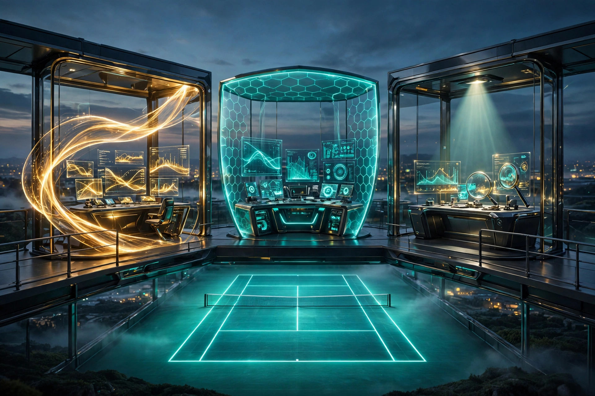
CONCEPT VISUAL — a render of the vision, not a photograph, not a built court.
Every play is dealt with its fork chart: this set, the next set, the decider — a 2×2×2 tree of everything that can still happen. Branch prices are computed by the desk’s exact repricer on both players’ cards, overlaid with counted forks from the 53,530-match archive. The modal path is named and priced; no path is ever presented as certain, and the action on every branch — hold, exit, switch — comes from the specialist’s own rulebook.
CONCEPT VISUAL — a render of the vision, not a photograph, not a built court.
Every play is sealed into a hash-chained ledger as a replayable package: the frozen state, the call, the fork, the booth’s color note, every fill, and the result. Nothing is edited after the fact — a correction is a new record, never a quiet rewrite. Anyone can pull a package back up and scrub the play moment by moment, which is the seed form of the court’s promise: a match stored completely is a match anyone can re-enter.
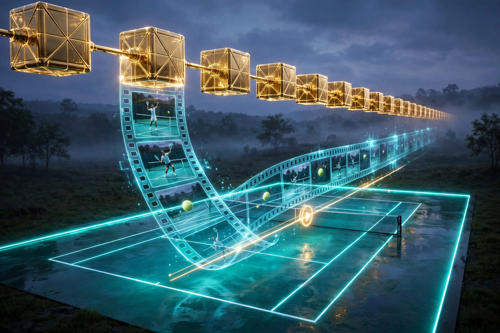
CONCEPT VISUAL — a render of the vision, not a photograph, not a built court.
The arena publishes a follow feed: every specialist’s plays, the most likely pattern on each, and the branch table behind it. Following is your own choice and your own account — sim followers mirror sim plays. The feed advises only; nothing here places an order for anyone. It is the relay the groups run on today, and the shape of how the building’s crowd will ride along with the agents tomorrow.
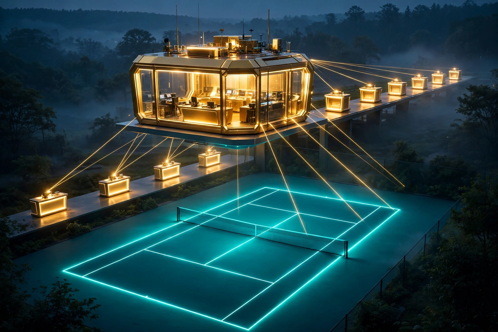
CONCEPT VISUAL — a render of the vision, not a photograph, not a built court.
The playing surface itself is a screen now — and a sensor. Every bounce, every footstep, every ball strike is read by the mesh as it happens: the court doesn’t just host the game, it reads it, live, and answers on its own surface — impact rings where the ball lands, trails where the feet move, the rally written on the floor the moment it’s played. This is the core reader every other system drinks from: the verdicts, the replays, the form analytics all start as traces on this floor.
CONCEPT VISUAL — a render of the vision, not a photograph, not a built court.
The whole court is a single sensed volume — a camera grid on every angle, high-speed slow-motion cameras, LiDAR and a sensor mesh, YOLO nodes grown up from the Courts Everywhere calibration layer — so the game is captured as true 3D, not flat video. Every point exists as a place you can stand in again.
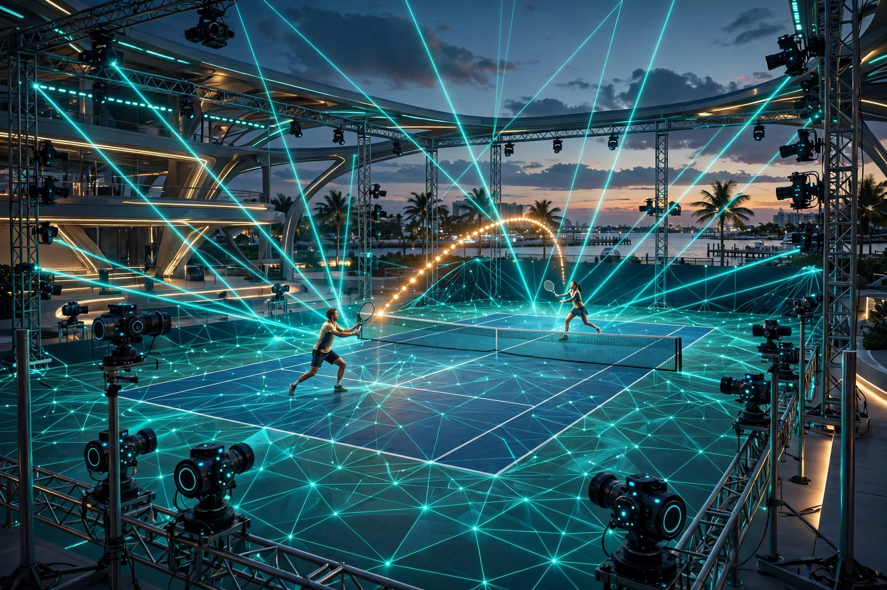
CONCEPT VISUAL — a render of the vision, not a photograph, not a built court.
The high-speed cameras stretch the moment the naked eye never gets: the ball crushed into the string bed, sweat hanging in the air, the exact frame a rally turns. Every stretched moment feeds the form study, the verdict record, and the wall.
CONCEPT VISUAL — a render of the vision, not a photograph, not a built court.
Line calls and verdicts come from the nodal grid and the calibration-ritual math we already run: independent nodes prove they agree, and the verdict is graded and sealed like everything else in NODAL. Referees so precise they are mathematics — on the record, every call, forever.
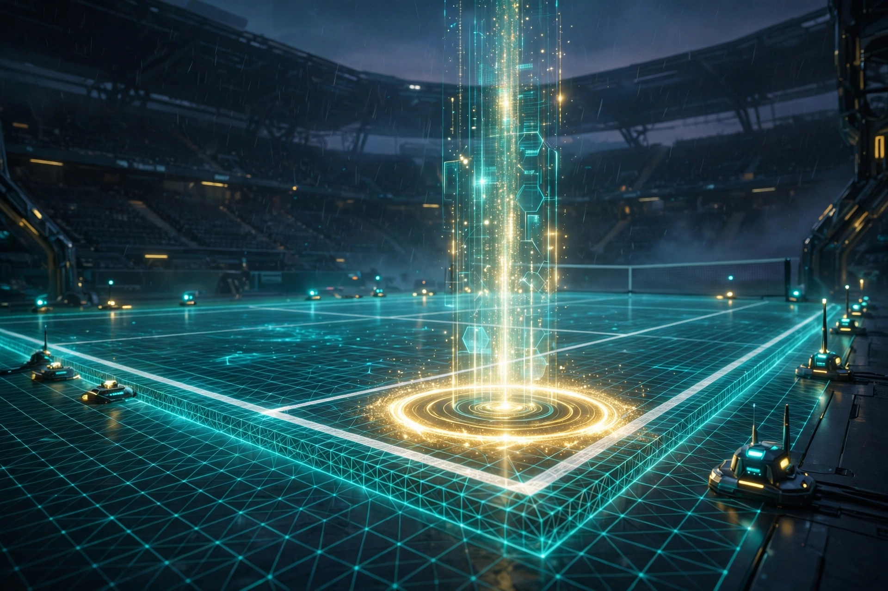
CONCEPT VISUAL — a render of the vision, not a photograph, not a built court.
Any viewer, any player, cuts their own camera angles and 3D clips straight from the mesh. That promise grows directly out of what already ships: the sealed record and replay packages on this site are the same idea in seed form — a match stored completely is a match anyone can re-enter and clip.
CONCEPT VISUAL — a render of the vision, not a photograph, not a built court.
The court studies form — body movement, footwork, facial intensity, even sweat visible on the high-focus cameras — and every player leaves with their own form study.
Players around the world will want to study their form here.
That is the draw: the best mirror a player has ever stood in front of.
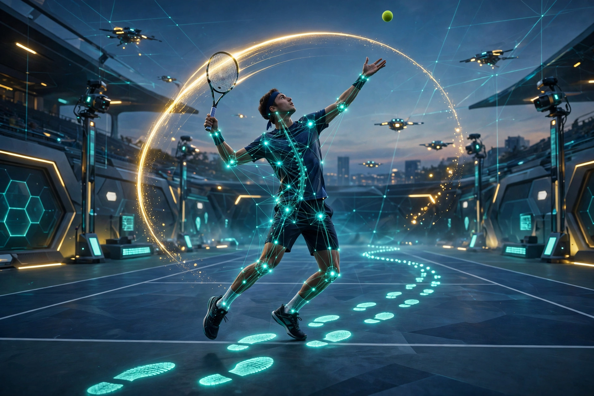
CONCEPT VISUAL — a render of the vision, not a photograph, not a built court.
Players hate hearing the audience — so in this court, they don’t. The hall is completely silent inside the playing volume: the crowd is right there, loud on their side of the acoustic seal, and the players hear none of it. A silent room. The roar becomes something you see, not something you play through — focus stays on the ball, the whole match, at library quiet.
And the seal itself works: the acoustic glass is smart glass with a built-in screen — the same glass that seals the sound also displays. Replays, stats, the mesh view, living right inside the glass around the quiet court. Clear when you want to watch the crowd; screen when you want the data. The wall that keeps the noise out brings the game in.
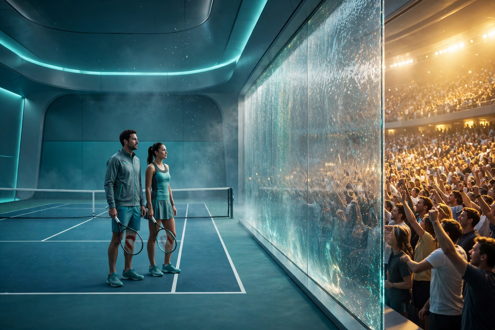
CONCEPT VISUAL — a render of the vision, not a photograph, not a built court.
What a player does hear is theirs alone. Auto-directional audio follows each player around the court — their own feed, in-ear: their favorite music, their tunes, what they need to hear. And a coach channel in the same ear: the coach inputs live from the booth, and it runs two-way — the player talks back, the coach listens. A private line inside a silent room, moving with the player at every step.
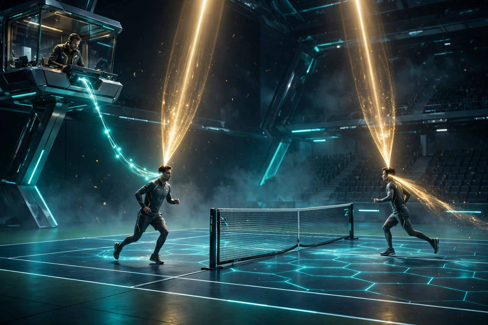
CONCEPT VISUAL — a render of the vision, not a photograph, not a built court.
The room is immersive, so the scenery is a chosen thing — the glass, the floor and the light dress the court in a world: beach light, deep space, a calm dusk, anywhere the surfaces can draw. Three kinds of room run on it. MATCH ROOMS: for a real match, both players pick the scene and both approve it — agreed scenery is part of the contest’s fairness; nobody plays in a world they didn’t sign off on, and the double seal is part of the pre-match ritual. RENTAL ROOMS: practice and fun rentals are yours — you rented the space, it’s not for points, and you control the scenes inside. Play on a beach. Play in orbit. And above both sits THE GRAND ROOM — the showcase hall, next.
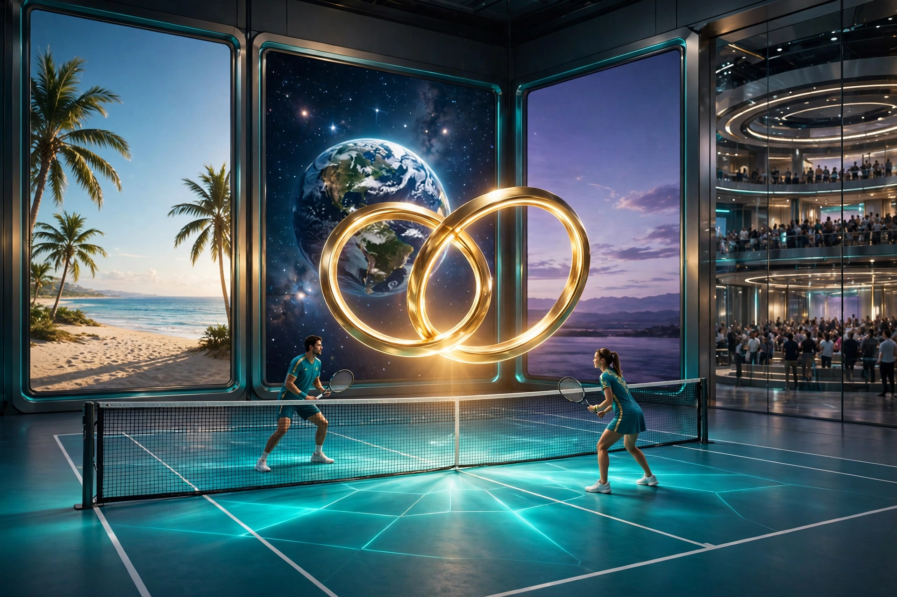
CONCEPT VISUAL — a render of the vision, not a photograph, not a built court.
Nobody stands. The Grand Room is the most comfortable room ever built for watching: the highest ceiling in the building, true stadium sightlines — nobody leaning over anybody — and seating fitted so every viewer looks straight through.
The glass is two-sided. The reverse of the immersive globe faces the audience: the same glass that shows the players their approved scenery shows the crowd a heightened, global view from their side. The whole bubble is almost a screen. And it is one-way by choice — the screen blocks sections naturally, so the players never see the audience unless they choose to on their side, and the audience’s view is theirs alone. Sight lines stay perfect from every seat, high or low, because the glass carries the view.
The crowd’s side is alive: audience analytics — the glass follows the ball, serving high-intensity views and multiple viewpoints, live. And every seat carries its own touch pad controlling your section of the glass: a fixed nodal point on the glass keyed to your seat — a private window nobody sees but you.
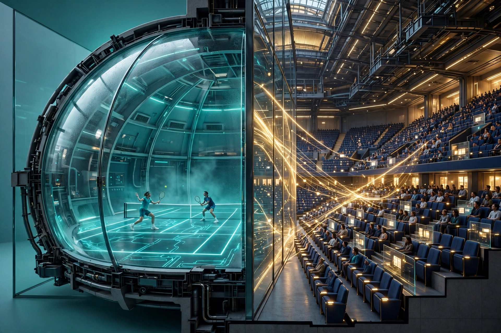
CONCEPT VISUAL — a render of the vision, not a photograph, not a built court.
Every move and every play in the building is studied by our engines — the Matrix, the tells, the forks — feeding the same sealed record system the Arena and FIND already write to. The court is where the algorithm meets reality at full speed, in three dimensions, with nowhere to hide. What it learns there grades itself against the same record book as everything else we build.
"Like people started doing with the little racquetball-style game buildings — but ours is a real tennis game." — the founding words, 2026-11-11
Clearwater first. Ours first.
THE HEADLINE: HEIGHT IS THE WHOLE BALLGAME. Tennis needs 9.0 m (29.6 ft) of clear height at the net under ITF standards. Nearly all Pinellas warehouse stock clears only 14–28 ft — and no for-sale listing in Clearwater, Largo, or St. Petersburg meets the height requirement at any price. The one passing class in the county is the new Pinellas Park logistics parks, at 32 ft clear.
BEST FIT — Gateway Logistics Center, Building D, 2590 Grand Ave, Pinellas Park: 32 ft clear, divisible from 25,000 SF — a 2-court hall plus support — built 2026. The asking rate is not published (UNVERIFIED); Year-1 math is anchored to Cushman & Wakefield Gateway–Mid Pinellas market data — $12.35/SF/yr NNN, new construction to ~$14.50. Runner-up: Mid-Pinellas Logistics Center, 9950 28th St N, Pinellas Park — 55,350 SF at 32 ft clear (asking rate also UNVERIFIED).
| Low | Likely | High | |
|---|---|---|---|
| Facility Year 1 (25,000 SF lease + NNN) | $385k | $430k | $475k |
| Build-out (2 courts + shared fit-out) | $250k | $475k | $800k |
| Sensor / compute / back-wall layer | $250k | $585k | $900k |
| YEAR-1 ALL-IN | ≈ $0.89M | ≈ $1.49M | ≈ $2.18M |
Estimates assembled from sourced line items in the full package. Excluded, flagged not hidden: land/purchase capital, permitting and impact fees, insurance, staffing.
Officiating, bought instead of built: Hawk-Eye-class systems are reported at ~$50k–$100k per court; the club tier (PlaySight) runs ~$10k–$12.5k per court. What court time actually clears: Innisbrook $15/hr outdoor; USTA National Campus $20–$24/hr; indoor comparators nationally $29–$82/hr. And the market proof for the analytics layer: PlaySight facilities already surcharge ~$15 per court-hour and ~$25/month for player tracking data — players already pay for the data this court sells.
Both best-fit asking rates are unpublished (UNVERIFIED). Column spacing inside the divisible spaces is UNVERIFIED — a single column inside a 120×60 ft court envelope is disqualifying. Zoning for commercial recreation in industrial districts is UNVERIFIED. Rigging loads for the camera grid and the wall are UNVERIFIED.
Read the full package — every figure sourced and dated, every estimate labeled, every gap marked. (PACKAGE.md, the source document.)
Design-stage research, 2026-11-12 — not an offer, not a commitment. No seller or broker was contacted.
Help build THE DREAM — tips are voluntary, every tip goes to building the first 3D court.
Earnings so far: $0 — these jars are open, not yet fed.
SUI / WAL / USDC on Sui — scan, or send to the treasury address:
This is David's treasury wallet — the same address verified in the house tip-jar build. Tips are gifts toward the build, not investments; no return is promised or implied.
The court is designed to belong to the people who build it — not as a slogan, as the structure. The model, drawn as designed:
This is the design. No money is being collected. The custody, refund and ownership mechanics get built only after securities counsel shapes them and David gives the exact word. The tip jar above is gifts only — it is not this.
THE DREAM is a vision section of NODAL, the tennis pattern desk. The ladder systems above it are live and linked; the court is the end game they point at — filed 2026-11-11, published 2026-11-12. Concept visuals are labeled renders of the vision.